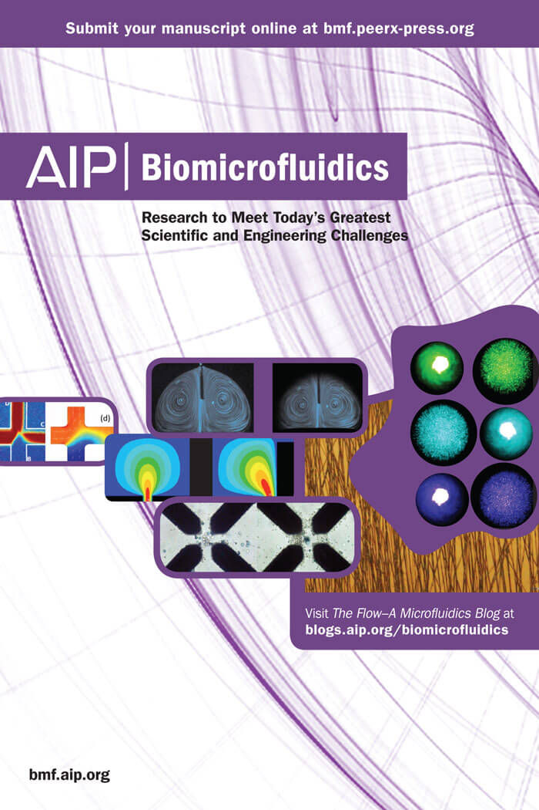
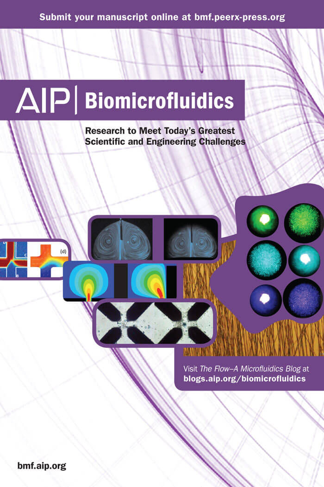

At the core of all my projects, I think like a designer. What am I making? What is its purpose? What is its personality? What are the user’s expectations? As the project evolves, the answers that come to light steer the course. I am grateful for my educational experience in the Web Development Immersive at General Assembly in 2014. It is so great to actually be able to produce a finished product. I am presently working with HTML5, CSS/CSS3, JavaScript, JQuery, Node, and Meteor. Really, I’m a Dev-igner. I invite you to view some of my work.
Please contact me with any inquiry by email, j_ortenberg@yahoo.com, or ring me at 917-309-9410.


 
